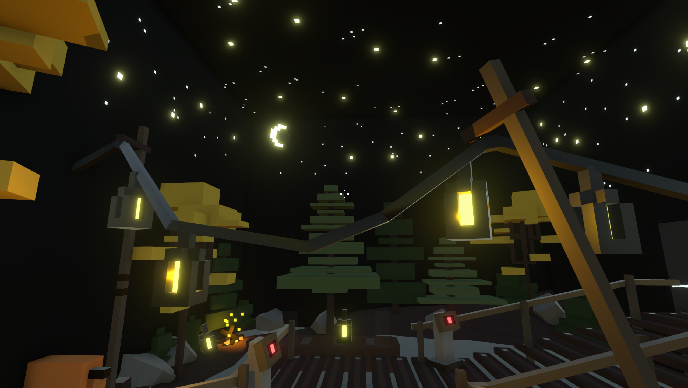
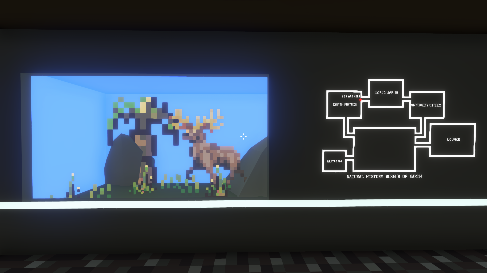
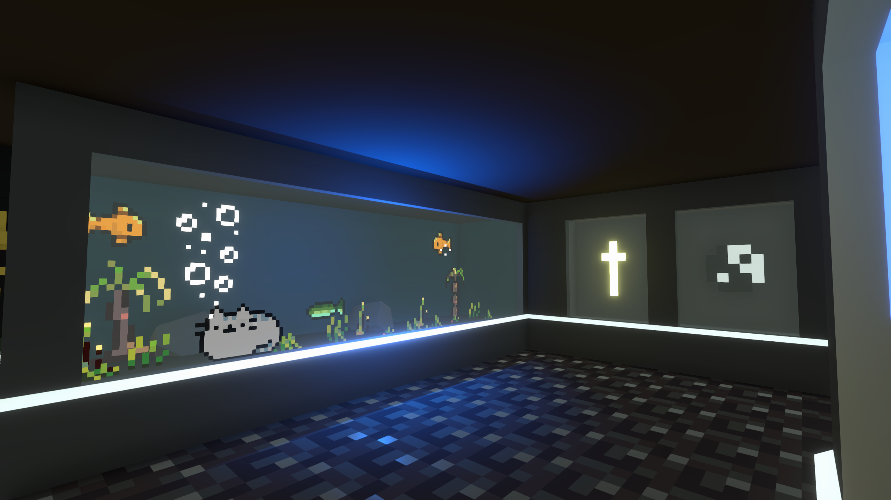

<--Mainhall
Organic History of Earth
exhibits

-The Moon-
Earth's only former satellite. Destroyed during World War IV by an implosion caused by a U.S. raid on the new Soviet Union's lunar engine base.

-Wood-
Wood was once a versatile, valuable resource. According to archaeologists, wood was once found in shipbuilding, fuel, construction, clothing, food and the vast majority of industries. But with the advancement of technology and dwindling wood resources, wood is gradually becoming a luxury commodity.
tips: The last outdoor-grown tree on earth was sold by the Brazilian government to an anonymous Brazilian entrepreneur in 2198 and boarded with him on the last flight to Nivarus.

-Non-Synthetic Water-
Archaeologists predict that the last drop of drinkable, non-synthetic water on Earth vaporized in Antarctica in 2128. Marking the entry of mankind into the era of full-scale desalination.
tips: in 2107, a bottle of "natural spring water" was worth $598 (approx. ⇞10,889)
<--Mainhall
The largest and most detailed museum of Earth history on Nivarus XII